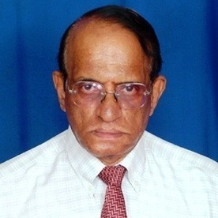

About Us
Dr. S. Sheerazuddin
Associate Professor, Dept. of CSE, SSN College of Engineering, Chennai.
Guided and helped Sriram in completing the work.
Acknowledgement

Dr. V. Purnachandra Rao M.Eng. Ph.D. FIRSTE. MIRT, MCSI
Ex. Chief Signal & Telecom Engineer, Director/IRISET/Min. of Rlys(Retd.)
Pioneered, explained the hard concepts of Indian Railways and motivated to complete this work.
Sriram K
M.E. final year in CSE, SSN College of Engineering, Chennai.
Did this as project for final year M.E. course.